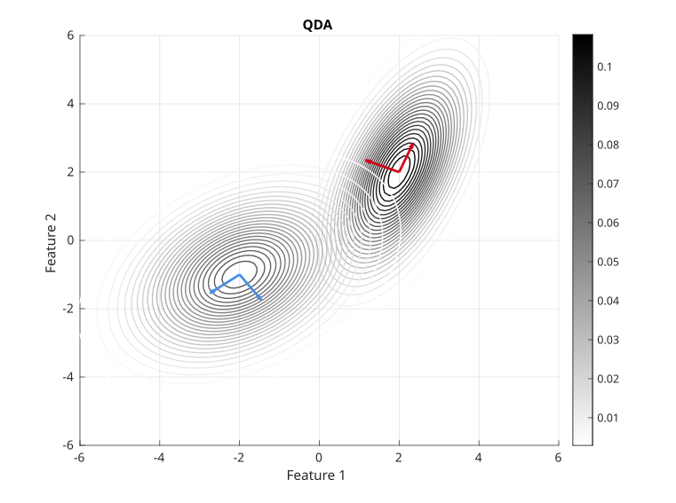
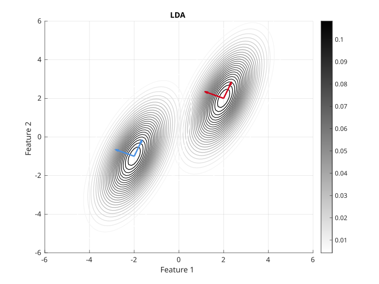
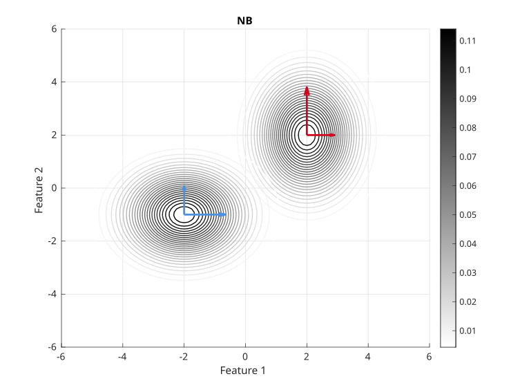

Week 6¶
Generative Models for Classification¶
For classification(1), logistic regression involves directly modeling
- For simplicity, here we assume \(\mathcal{Y}=\{0,1\}\) and \(\mathcal{X}=\mathbb{R}\).
using the logistic function. We now consider an alternative and less direct approach to estimating these probabilities -- we model the distribution of the predictor in each of the response classes, i.e. \(p(x\mid y)\) for each \(y\in \mathcal{Y}\). We then use Bayes’ theorem to flip these around into estimates for \(Pr(y = 1 \mid x)\)(1).
- This requires the knowledge of \(p(y)\) for each \(y\in \mathcal{Y}\), which can be either the proportion of each class among the whole data set, or regarded as unknown parameters which we will estimate later.
To summarize, for discriminative models(1), we model \(p(y\mid x)\) and use this to predict while for generative models, we model \(p(y,x)\) and then use this to compute \(p(y\mid x)\) for predictions.
- Discriminative models, also referred to as conditional models, studies the \({\displaystyle P(y|x)}\) or maps the given unobserved variable (target) \(x\) to a class \(y\) dependent on the observed variables (training samples). Types of discriminative models include logistic regression, conditional random fields, decision trees among many others.
Specifically, we model
and want to obtain \(p(y\mid x)\) from this. Therefore, we need to specify a distribution for \(p(x\mid y)\): assume that \(x\in \mathbb{R}^p\) and is continuous, and \((x\mid y)\) follows certain Gaussian distributions. There are three kinds of assumptions on Gaussian distributions: quadratic discriminant analysis (QDA), linear discriminant analysis (LDA), and naive Bayes (NB).
QDA, LDA, and Naive Bayes¶
Model assumptions (figures show the Contour of \(x\mid y\) under different classes):
-
QDA assumes that \(\displaystyle x\mid y=j \sim \mathcal{N}_p(\mu_j, \Sigma_j)\).

-
LDA assumes that \(\displaystyle x\mid y=j \sim \mathcal{N}_p(\mu_j, \Sigma)\), where \(\Sigma\) is the common covariance matrix across all classes.

-
Naive Bayes assumes that \(\displaystyle x\mid y=j \sim \mathcal{N}_p(\mu_j, D_j)\), where \(D_j\) is diagonal for every class. This implies that the individual features are independent given \(y\). For NB, the eigenvectors of the covariance matrices are parallel to the axes.

Among the three models, QDA is the most complicated; LDA and NB are different -- one is not more complicated than the other.
Procedure of Prediction¶
We assume \(y\) takes in \(K\)-classes following multinomial distribution
where \(\pi = \left(Pr(y=1),\dots,Pr(y=K)\right)\) is a probability vector.
-
Choose a model QDA, LDA, or NB with unknown parameters \(\theta = \pi, \mu_j, \Sigma_j\) for \(j=1,\dots, p\).
-
Find estimates of the unknown parameters using MLE.
-
Compute \(\displaystyle p(y\mid x,\hat{\theta})\) and use this for classification.
Estimate Parameters¶
In QDA, the likelihood looks like
Maximizing this with respect to \(\pi, \mu_j, \Sigma_j\) for \(j=1,\dots, p\), we obtain: denoting \(n_j = \sum_{i=1}^n I(y^{(i)}=j)\),
where \(\hat{\pi_j}\) is the proportion of \(\{y^{(i)}\}\) in class \(j\), and \(\hat{\Sigma_j}\) is the sample covariance matrix(1) of all observations in class \(j\).
- A sample of numbers is taken from a larger population of numbers, where "population" indicates not number of people but the entirety of relevant data, whether collected or not. The sample mean is the average value of the sample. The sample covariance is useful in judging the reliability of the sample means as estimators and is also useful as an estimate of the population covariance matrix.
Compute \(p(y\mid x,\hat{\theta})\) and Prediction¶
For the 3rd step, we need to compute \(p(y\mid x,\hat{\theta})\) and make predictions. For a new \(x_*\) coming, we predict that \(y=j\) if
for all \(l \neq j\), that is
So we compute
For QDA, since \(x \mid y=l \sim \mathcal{N}(\mu_l,\Sigma_l)\), we have
Thus, is equivalent to
Denoting the \(\color{red}\text{red}\) term as \(c\in\mathbb{R}\), the \(\color{green}\text{green}\) term as \(b\in\mathbb{R}^p\), and the \(\color{blue}\text{blue}\) term as \(A\in\mathbb{R}^{p\times p}\), we obtain
This is called Quadratic discriminant analysis because this is a quadratic function.
For LDA, since \(\Sigma_j=\Sigma_t\) for any \(j,t\), we have \(A=0\) and the inequality becomes
For NB, since \(\Sigma_j\) is diagonal matrix, the term
where no terms \(x_ix_j\) for \(i\neq j\) appears in the classifier.
Compare with Logistic Regression¶
-
Logistic regression with no feature transformation is similar to LDA. Both give linear decision boundaries. If \(p(x\mid y=j)\) is approximately Gaussian, LDA is a bit better. If this fails, logistic regression is better.
-
Logistic regression with quadratic feature transformation (with intersection terms) is similar to QDA. If \(p(x\mid y=j)\) is approximately Gaussian, QDA is a bit better. If this fails, logistic regression is better.
-
Logistic regression with quadratic feature transformation (without intersection terms) is similar to NB. If \(p(x\mid y=j)\) is approximately Gaussian, NB is a bit better. If this fails, logistic regression is better.
We should choose between LDA, QDA, NB, and Log regression via cross-validation.
To use QDA in practice, we estimate \(A,b,c\) by plugging the estimators for \(\mu,\Sigma,\pi\) (which is easy to compute).
Generative models are computationally easier than Log regression.
QDA can run into problems when some classes only have a few observations as we have to estimate \(\Sigma_j\) for each class. For example, consider image classification of animals. Observations \(X\) is high dimensional but only a couple of images of Walruses. So \(\Sigma_{\rm Walrus}\) is tough to estimate, and QDA performs poorly.